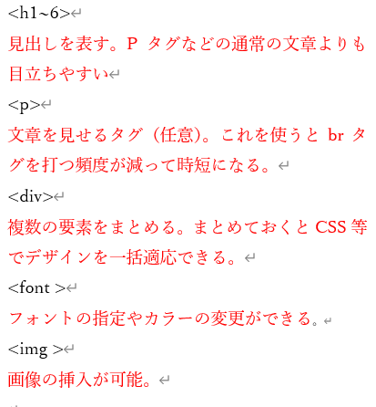
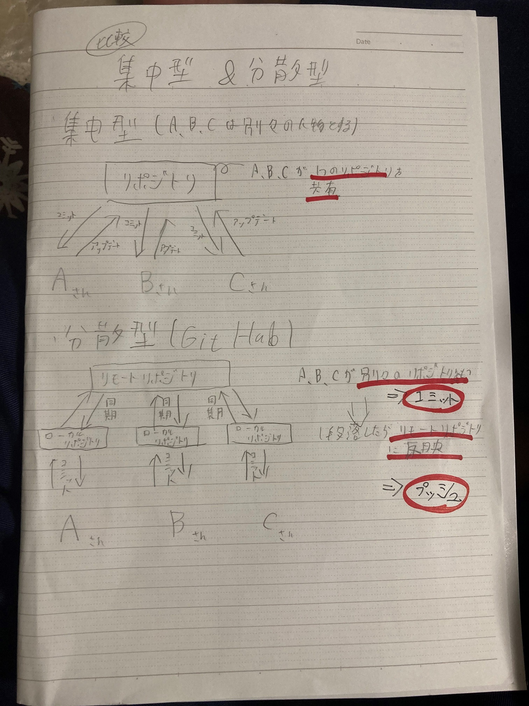

初回のデザイン演習ではHTMLをいじることをした。まずいじるにあたってテキストエディターに入力をするのだが文字を大きくしたり画像を表示するなどの
特殊な効果を付与するためにはタグで囲う必要がある
今この文章の上に大きく「今回学んだこと」と表示されているがそれはh1タグで囲っているからである。改行するにはbrタグを使う必要がある。
XBPのトップページ 左のリンクを押すとXBPポートフォリオのトップページに飛ぶのだがこれもaタグやhref,targetを利用している
またこの文章もPタグを使って書いている。また、UL.OLタグを使うと以下のようなことができる
以下が個人的によく使うタグのまとめである
Gitとは分散型バージョン管理を行うシステムだ。分散型バージョン管理システムと聞くと難しく思えてしまうが、保存場所として専用の保管場所を提供するということだ。
流れとしては、個人の保管場所で作業しファイル修正などが済むと共有する保管場所にアップロードする形になる。
この流れはHTMLファイルを修正してソース管理⇒コミット⇒同期のこの授業でとっている形と似ている。
また分散型の他にも集中型のものもあるが、保管場所が1か所しかないため、複数人で同時修正すると上書きされてしまうデメリットがある。
しかし分散型の方法をとっているGitはそのようなデメリットはない。勘違いをしている人もいるかもしれないがGithubとは別物である。
htmlとは授業でやった通り、Hyper Text Makeup Languageの頭文字をとったものでマークアップ言語の1つである。
マークアップ言語とは文章の構成や役割を示したものだ。htmlはwebサイトを作成する際にコンピューターへ構成指示をだし
表示したい文章や写真などの情報を形作ることができる。
また、記述により、YahooやGoogleなどの検索エンジンがWebサイトの構造を把握しやすくなる。
以下は自身で図示したものである
CSSは初めていじってみました！今後いろいろと改善していきたいです！ここにいろいろと感想とか載せるんでリアルでも気軽に話しかけてくれたらなぁと思います！